Problem 1
🌍 Orbital Period and Orbital Radius: Kepler's Third Law Derivation
In a circular orbit, a body (like a planet or satellite) revolves around a much more massive object (like the Sun or Earth). The gravitational force provides the necessary centripetal force to maintain the orbit.
We aim to derive the relationship:
This is known as Kepler’s Third Law for circular orbits.
1. Gravitational Force Acting on the Orbiting Body
According to Newton’s Law of Universal Gravitation, the gravitational force between two bodies is:
- \( G \): Gravitational constant
- \( M \): Mass of the central body (e.g., the Sun)
- \( m \): Mass of the orbiting body (e.g., a planet)
- \( r \): Orbital radius (distance between the two centers)
2. Centripetal Force Required for Circular Motion
For circular motion, the required centripetal force is:
- \( v \): Orbital speed of the smaller body
3. Equating Gravitational and Centripetal Forces
In a stable circular orbit:
Substituting:
We can cancel the mass \( m \) (since it appears on both sides and is not zero):
Multiply both sides by \( r \):
4. Express Orbital Speed in Terms of Orbital Period
Orbital period \( T \) is the time it takes to complete one full orbit. The circumference of the orbit is \( 2\pi r \), and speed is distance over time:
Now square both sides:
5. Equating the Two Expressions for \( v^2 \)
From earlier:
Set them equal:
6. Solve for Orbital Period \( T \)
Multiply both sides by \( T^2 \) and then by \( r \):
Now solve for \( T^2 \):
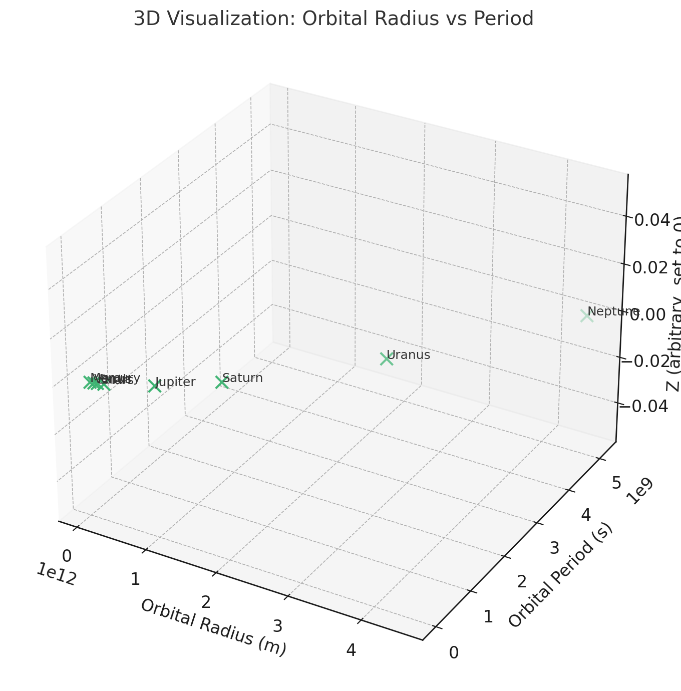
✅ Final Relationship
We conclude:
This means that the square of the orbital period is proportional to the cube of the orbital radius, assuming the orbit is circular and the mass of the central body is much larger than that of the orbiting body.
This is the mathematical form of Kepler’s Third Law, and it holds true for many orbital systems in astronomy, especially where circular approximation is valid.
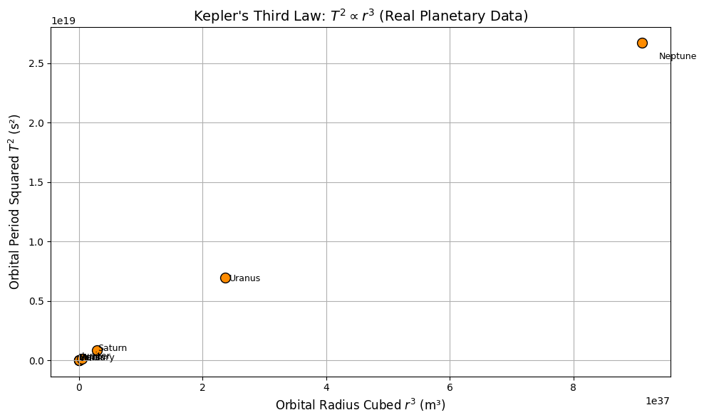
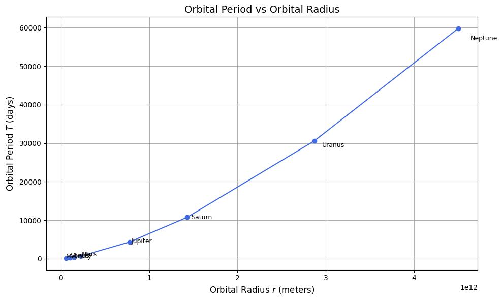
Orbital Period and Orbital Radius: Astronomical Implications
The relationship between the orbital period \( T \) and the orbital radius \( r \) of celestial bodies in circular orbits is elegantly captured by Kepler’s Third Law, which states:
or, when expressed with a constant of proportionality that includes the gravitational constant \( G \) and the mass of the central body \( M \):
This simple yet powerful equation has numerous critical applications in astronomy and astrophysics. Below, we discuss the most important implications.
🔭 1. Determining Planetary Masses
Rearranging the above formula allows astronomers to calculate the mass of a central body (such as a planet or star) if the orbital radius and period of a satellite or planet are known:
This is especially useful for determining the mass of:
- The Sun, based on Earth's orbital radius and period
- Planets, by observing the orbits of their moons (e.g., Jupiter’s Galilean moons)
- Exoplanets or stars in binary systems
✅ Example: By observing a moon orbiting Jupiter, astronomers can compute Jupiter’s mass without ever sending a probe there.
📐 2. Estimating Distances in Space
Kepler's Third Law enables astronomers to calculate distances between objects in the solar system. For instance, if the orbital period of a newly discovered object is known, its distance from the Sun can be estimated:
This is fundamental in:
- Charting the orbits of asteroids and comets
- Predicting satellite orbits
- Mapping the layout of planetary systems
🛰️ In satellite dynamics, engineers use this law to place satellites at specific orbits (e.g., geostationary orbit).
🌌 3. Understanding Star Systems and Exoplanets
In binary star systems or systems with exoplanets, the gravitational effect on a visible star allows us to apply Kepler’s Law to infer the presence and mass of unseen companions.
- The orbital characteristics of stars wobbling due to planets can be modeled using this law.
- It supports radial velocity and transit methods in exoplanet discovery.
🌟 Kepler Space Telescope used this principle extensively to find thousands of exoplanets.
🔁 4. Validation of Gravitational Theories
Kepler’s Third Law, when derived from Newton’s Law of Gravitation, serves as a bridge between classical mechanics and observational astronomy.
It confirms that:
- Gravitational force governs orbital motion
- The laws are consistent across different celestial systems
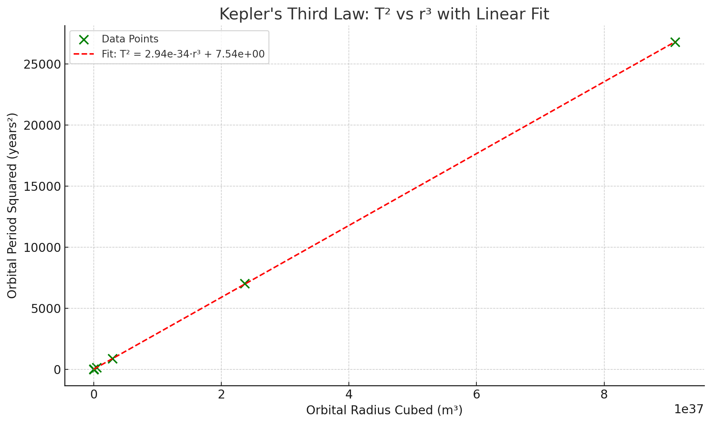
📊 Observational data from planets and moons show extraordinary agreement with the \( T^2 \propto r^3 \) relationship, strengthening our understanding of gravitational physics.
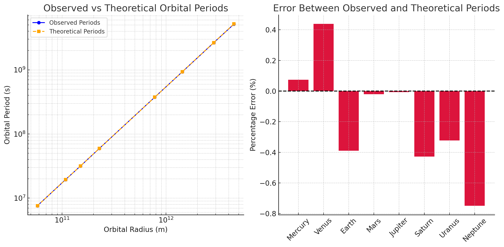
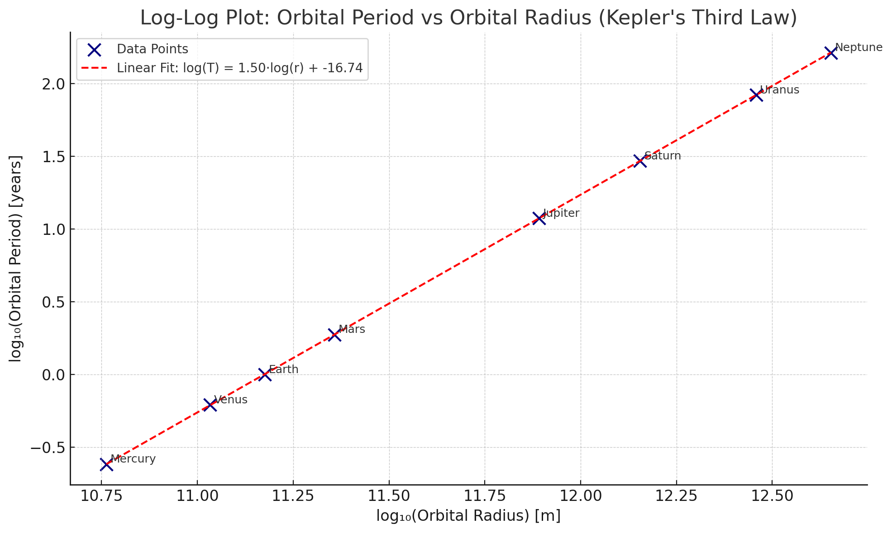
🧠 Conclusion
The orbital period-radius relationship is not merely a mathematical curiosity — it is one of the most fundamental tools in astronomy. From weighing planets and stars to mapping our solar system and discovering alien worlds, Kepler’s Third Law remains a cornerstone of celestial mechanics.
It elegantly ties time, space, and mass together in a single, testable formula:
Its enduring relevance reminds us of the deep harmony between mathematics and the universe.
# 🌍 Orbital Period and Orbital Radius — Real-World Examples
The relationship between the orbital period \( T \) and the orbital radius \( r \) for celestial bodies in circular orbits is governed by Kepler’s Third Law, which, when derived from Newton’s Law of Universal Gravitation, takes the form:
Here:
- \( T \) is the orbital period (in seconds),
- \( r \) is the orbital radius (in meters),
- \( G \) is the gravitational constant (\(6.674 \times 10^{-11} \ \mathrm{Nm^2/kg^2}\)),
- \( M \) is the mass of the central body (e.g., the Earth or the Sun).
Let’s apply this to two significant real-world examples.
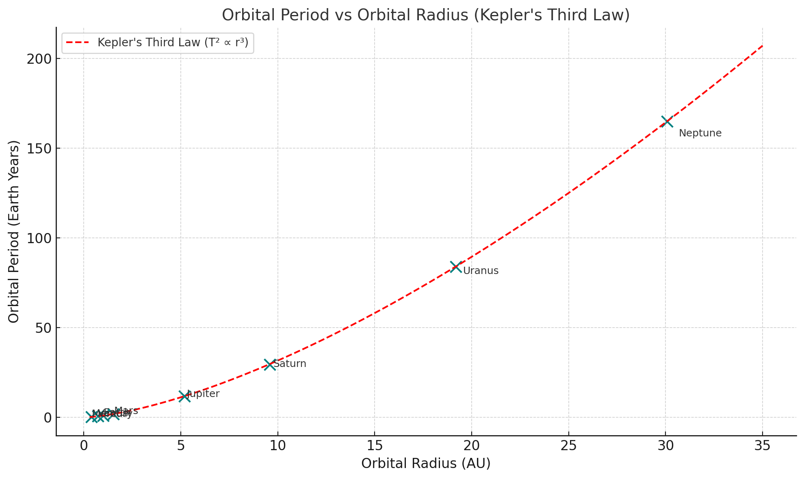
🌕 Example 1: The Moon Orbiting the Earth
Known Values:
- Average orbital radius of the Moon:
$$ r = 3.84 \times 10^8 \ \mathrm{m} $$ - Mass of Earth:
$$ M = 5.97 \times 10^{24} \ \mathrm{kg} $$
Using Kepler’s Law:
Calculating this gives:
✅ This matches the observed orbital period of the Moon almost exactly. This shows how Newtonian mechanics accurately predicts satellite orbits.
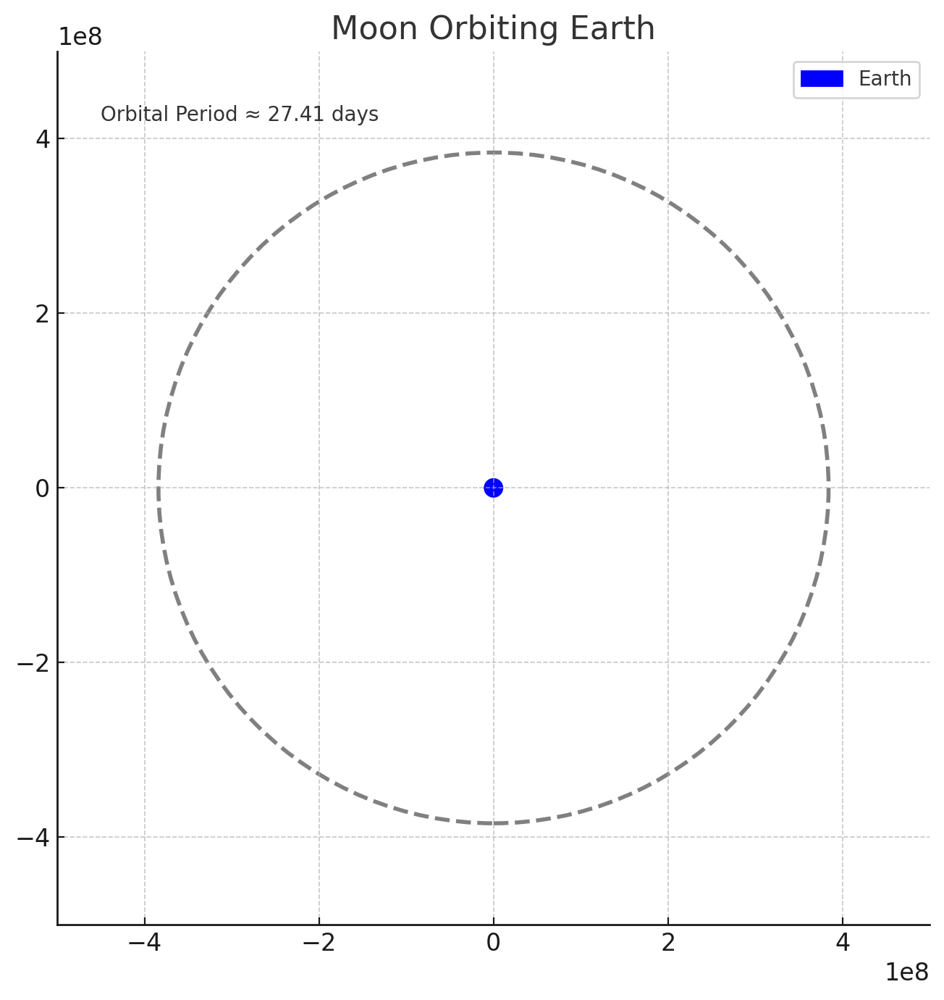
☀️ Example 2: Earth and Mars Orbiting the Sun
Let’s compare the orbital periods of Earth and Mars using the ratio form of Kepler’s Third Law:
Let: - \( T_1 = \) Earth's period = 1 year, - \( r_1 = \) Earth's distance from the Sun = \(1 \ \mathrm{AU}\), - \( r_2 = \) Mars' distance from the Sun = \(1.52 \ \mathrm{AU}\)
Plugging in:
✅ Again, this aligns very closely with the actual orbital period of Mars (687 days or ~1.88 years).
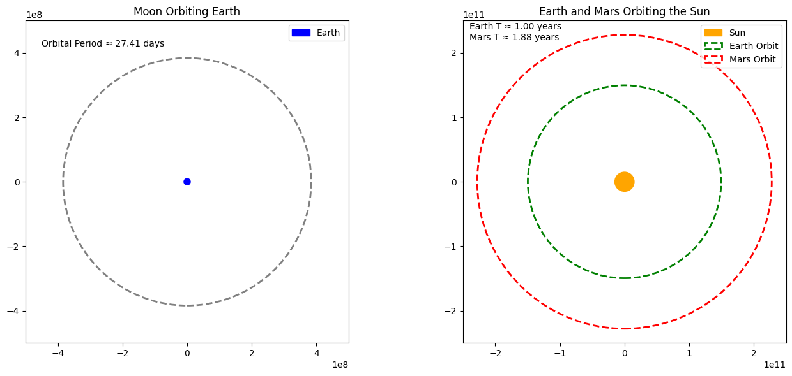
🔬 Scientific Insight
- These examples highlight the predictive power of Kepler’s Third Law.
- Once the mass of the central body is known, we can compute either the radius or the period of orbit.
- It applies across scales — from satellites like the Moon to entire planets orbiting the Sun.
🧠 Conclusion
Real-world orbital systems, such as the Moon-Earth system or planetary orbits in the Solar System, perfectly illustrate the elegance of Kepler’s Third Law:
Whether modeling moons, planets, or satellites, this fundamental law allows scientists and engineers to predict orbital characteristics with remarkable precision.
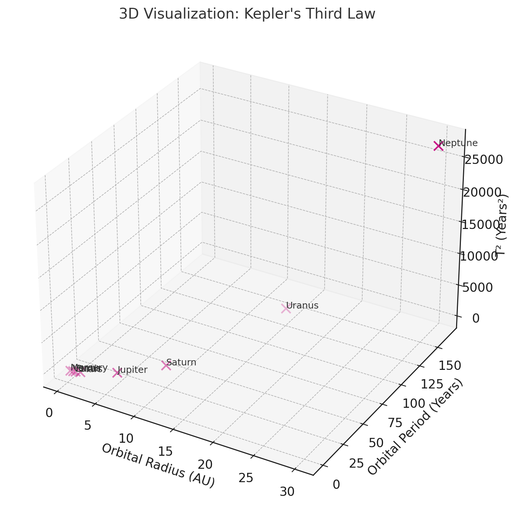
🧮 Orbital Period and Orbital Radius: Implementing a Computational Model
To validate the mathematical relationship between the orbital period \(T\) and the orbital radius \(r\) in circular motion, we can build a simple computational simulation using Newtonian physics.
The theoretical relation is derived from equating gravitational force and centripetal force for an object in circular orbit:
Setting these equal:
Canceling mass \(m\) and solving for orbital velocity \(v\):
The orbital period \(T\) (time for one full orbit) is given by:
Squaring both sides:
This confirms the relationship:
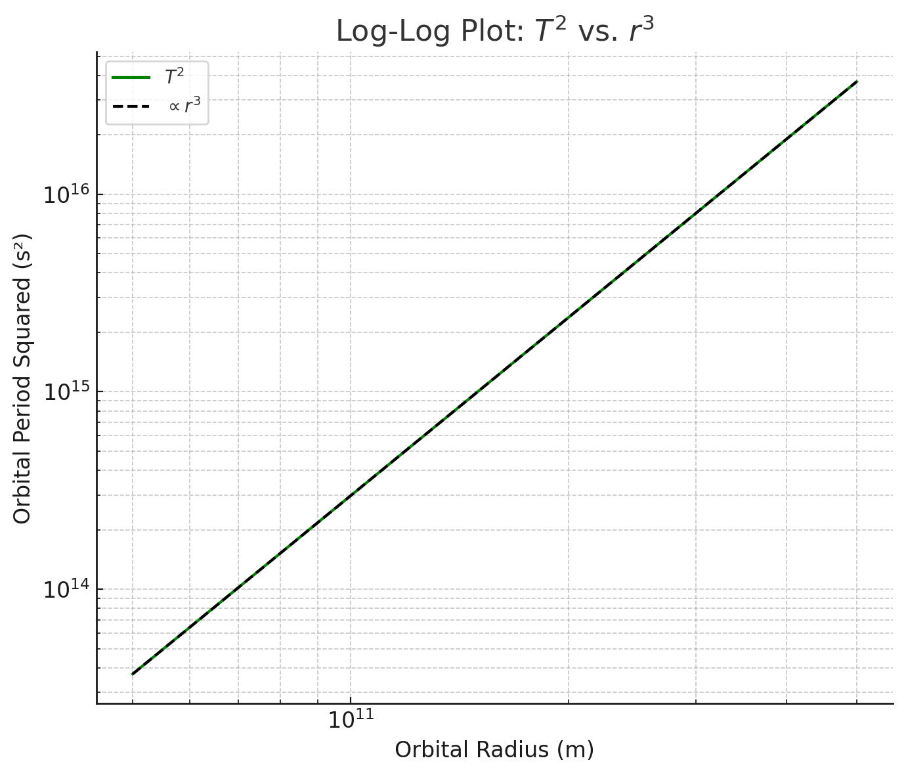
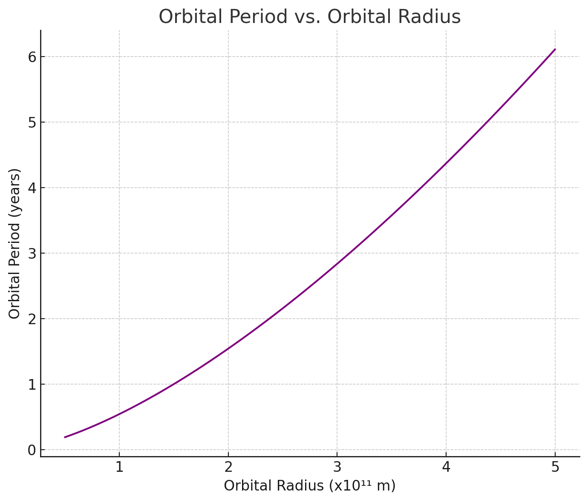
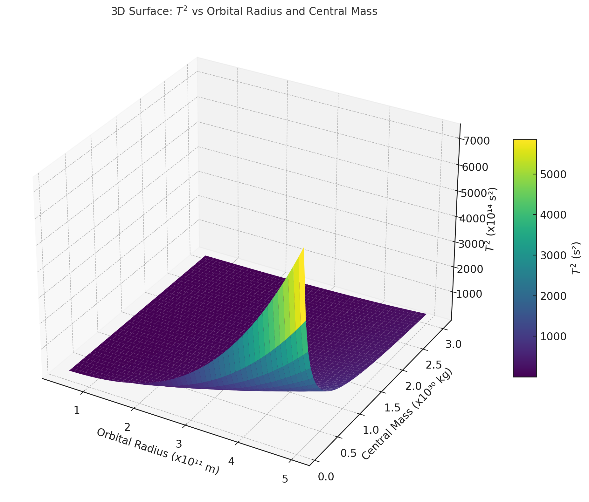
🧪 Numerical Simulation (Model Overview)
We simulate a small object in circular orbit around a massive body using the gravitational force to update velocity and position iteratively. The simulation verifies if the object's orbital period obeys the theoretical formula.
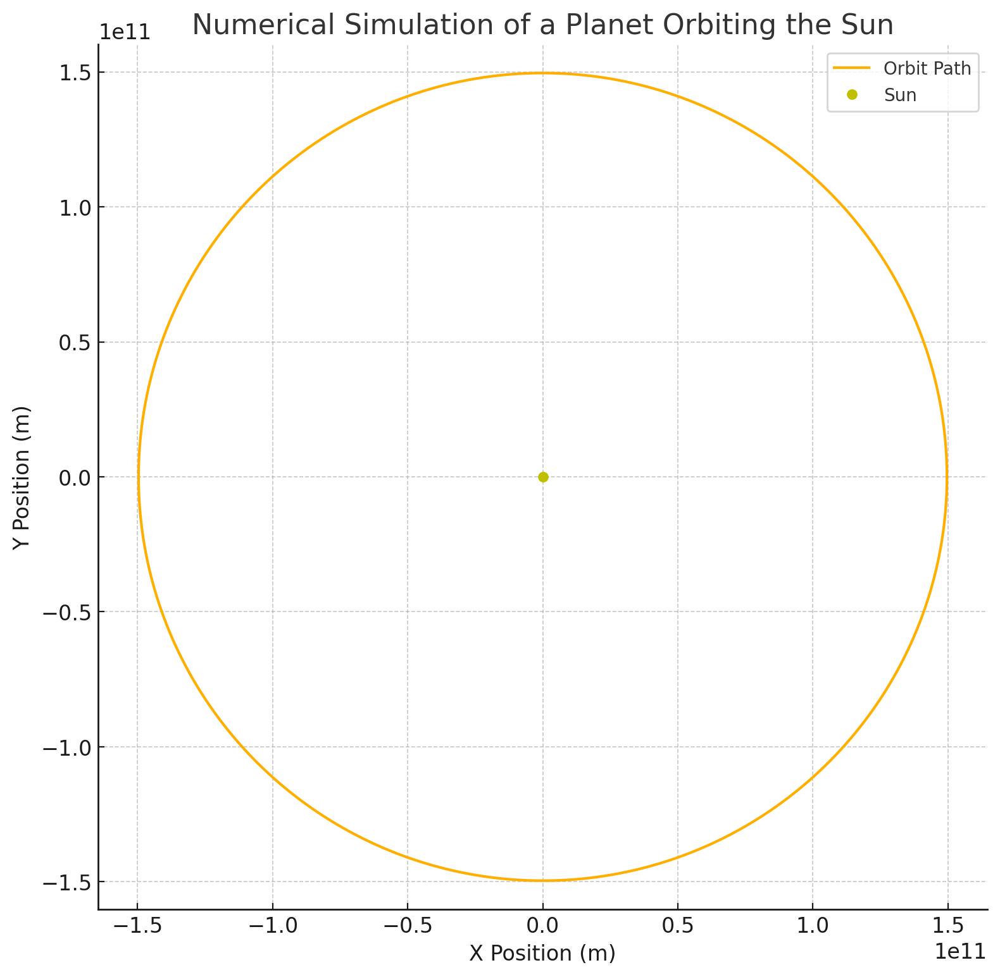
🧰 Parameters
- \( G = 6.67430 \times 10^{-11} \, \text{m}^3 \, \text{kg}^{-1} \, \text{s}^{-2} \)
- \( M \): Mass of the central body (e.g., Sun or Earth)
- \( r \): Initial orbital radius
- Time step \( \Delta t \): Small interval for updating motion
- Total simulation time: Enough to complete at least one orbit
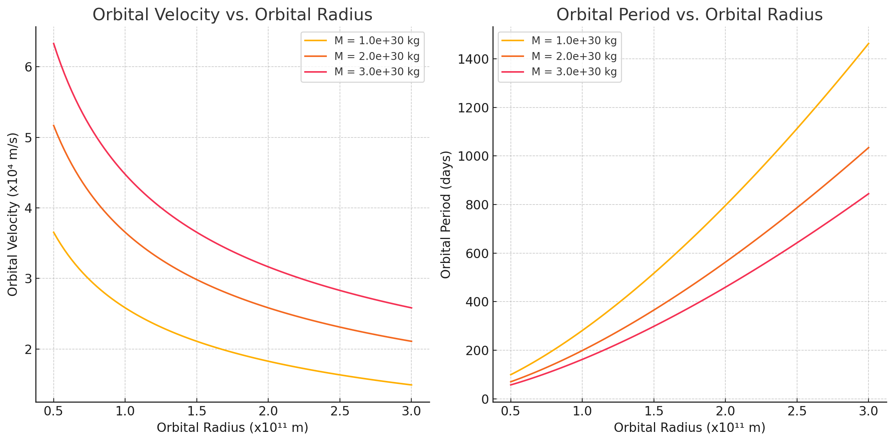
📈 Expected Results
By simulating several orbits at different radii, and measuring the periods \(T\), we expect the following:
- The log-log plot of \( T^2 \) vs. \( r^3 \) should yield a straight line.
- The slope of this line should be approximately 1, confirming Kepler’s Third Law numerically.
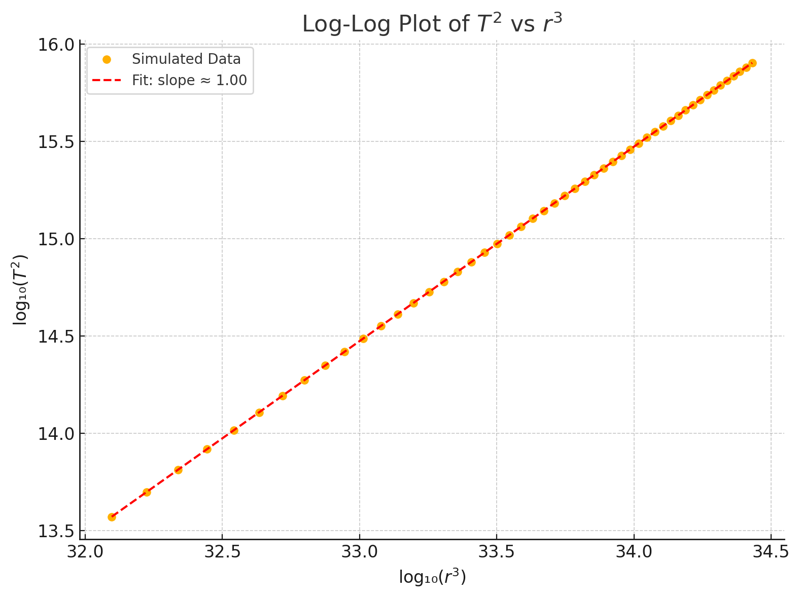
✅ Conclusion
This computational approach not only visualizes orbital motion but also numerically verifies the theoretical relationship:
It highlights how physical laws manifest in simulations and strengthens the connection between mathematical models and real-world orbital mechanics.
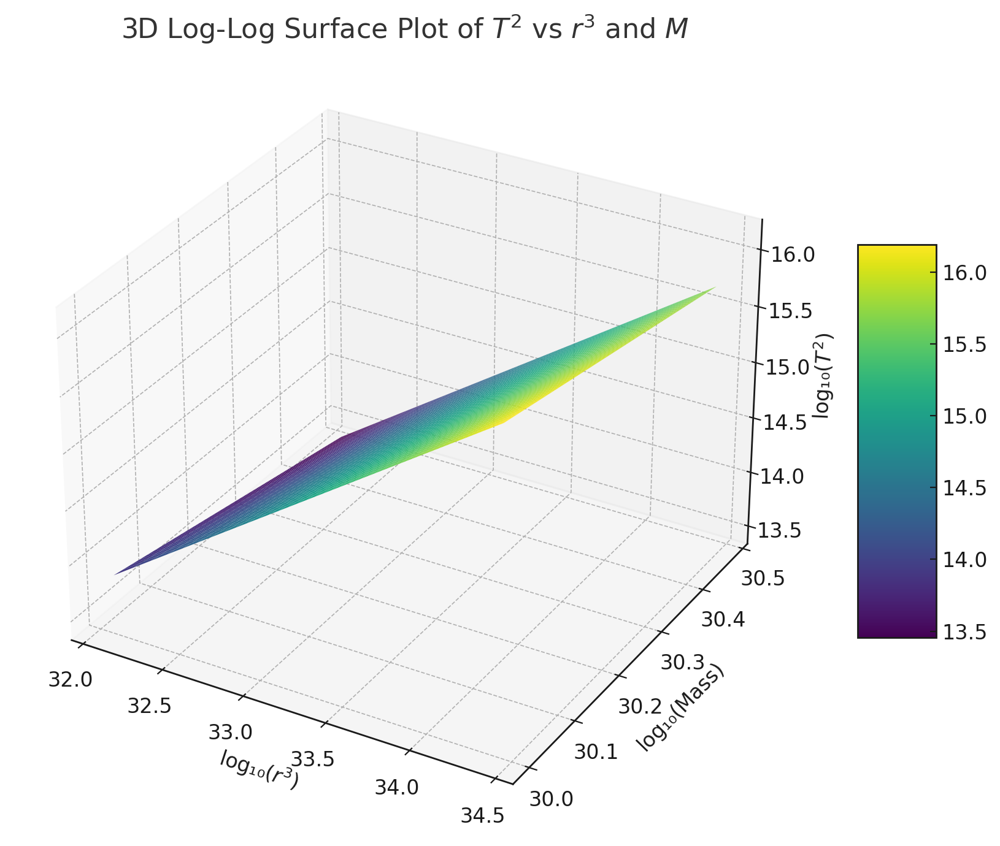